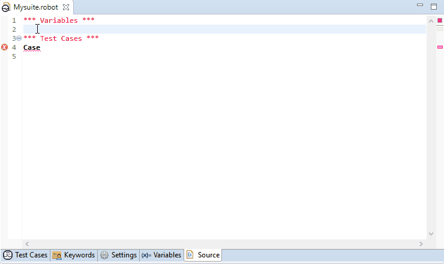
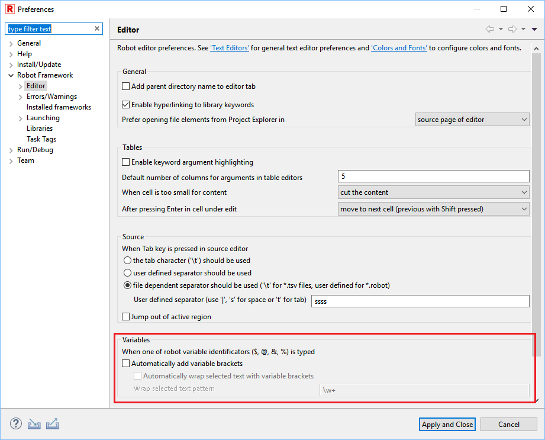

Variable typing in editors
RED supports several variable typing enhancements. When this feature is enabled, variable brackets {} are automatically inserted after typing one of Robot variable identifiers ($, @, &, %).
Corresponding bracket is automatically deleted when brackets are empty and first bracket is deleted by typing Delete or Backspace.
When selected text matches given pattern and one of variable identifiers is typed, selection is wrapped with variable brackets.

Variable typing preferences
All variable typing related preferences (bracket insertion, text wrapping, text wrapping pattern) can be configured at
Window -> Preferences -> Robot Framework -> Editor in Variables section.
